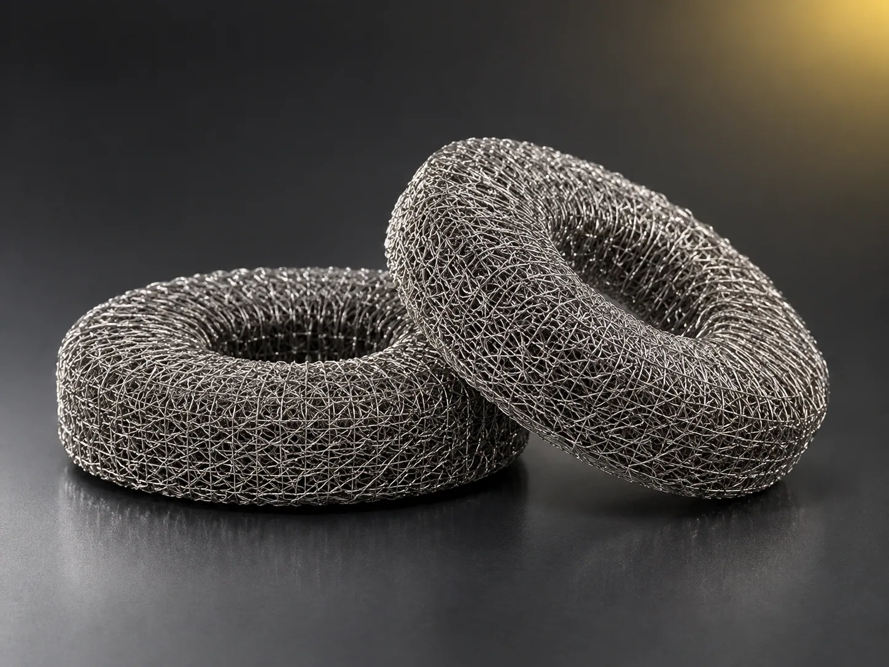

毡用金属纤维
不锈钢、镍、钛、铁铬铝、铜等材质，提供长纤维、车削纤维与纤维棉条三种形态，作为烧结毡、针刺毡的原料直接供货。
由微米级金属纤维无纺成网后经高温层压烧结而成。多层结构形成由粗到细的孔隙梯度，既能控制极高的过滤精度，又比单层获得更大的纳污量。
一句话定义：微米级金属纤维高温烧结而成的多层梯度孔过滤材料，是耐高温、耐腐蚀、高精度工况下的理想滤材。
强纶金属烧结毡稳居黏胶行业国内首位，先后研制出国内首张 KKF 滤机烧结毡、最大规格 KKF 滤机烧结毡以及首张国产金属纤维针刺毡；针刺毡产品已应用于长征五号 B、长征五号遥五运载火箭发动机。
材质：不锈钢、镍、哈氏合金、铁合金、蒙乃尔合金、双相合金等。
| 系列型号 | 绝对过滤等级 μm | 厚度 mm | 过滤率 % | 气泡点压 Pa | 200Pa 透气值 |
|---|---|---|---|---|---|
| 10KIA3 | 10 | 0.3 | 75 | 3700 | 110 |
| 15KIA3 | 15 | 0.37 | 75 | 2470 | 190 |
| 20KIA3 | 20 | 0.45 | 80 | 1850 | 300 |
| 25KIA3 | 25 | 0.61 | 80 | 1480 | 350 |
| 30KIA3 | 30 | 0.63 | 80 | 1230 | 500 |
| 40KIA3 | 40 | 0.66 | 78 | 925 | 620 |
| 60KIA3 | 60 | 0.7 | 86 | 620 | 1200 |
| 10KIA3K | 10 | 1.1 | 85 | 3500 | 140 |
| 15KIA3K | 15 | 1.1 | 85 | 2400 | 250 |
| 20KIA3K | 20 | 1.1 | 85 | 1700 | 350 |
| 25KIA3K | 25 | 1.1 | 85 | 1400 | 470 |
| 10KIC4 | 10 | 0.4 | 72 | 3700 | 100 |
| 15KIC2 | 15 | 0.4 | 72 | 2470 | 150 |
| 20KIC2 | 20 | 0.4 | 72 | 1850 | 200 |
| 25KIC4 | 25 | 0.5 | 72 | 1480 | 280 |
* 各型号气泡点与透气值不同，上表为常规区间值；实际以出厂检验报告为准。可按客户要求定制加强、加厚、密集网等特殊规格。
同一套复合拉拔与烧结工艺，可交付从纤维原料到成品毡件的完整形态，按设备与工况定制。
不锈钢、镍、钛、铁铬铝、铜等材质，提供长纤维、车削纤维与纤维棉条三种形态，作为烧结毡、针刺毡的原料直接供货。
为黏胶行业 KK、KKF 滤机配套的大幅面烧结毡。公司研制出国内首张及最大规格 KKF 滤机烧结毡，可按设备型号与护网尺寸定制。
按滤芯结构裁切与成型的烧结毡，配内支撑网、外保护网与冲孔网制成熔体滤芯、水滤芯、除尘滤芯，见过滤元器件。
用于多孔介质燃烧器的耐高温金属纤维毡，燃烧面温度分布均匀、热强度高，配套燃烧器用金属纤维布一并供货。
面向电解水制氢的多孔金属纤维扩散层，兼顾导电、导气与机械支撑，由创新研究院氢能源研究室与同济大学团队共同开发。
以金属纤维缠绕压制成型的弹性阻尼元件，耐高温、耐油、无老化，用于常规橡胶减震件无法胜任的高温或强腐蚀环境。

此外还可供应纺织用金属纤维（直径低至 2μm，用于混纺纱线与织物，见金属纤维纱线）、微丝制品，以及加强毡、加厚毡、密集网与异形裁切、折波、焊接成型等定制加工，提交工况即可出方案。
用于化纤、聚酯薄膜、油脂、石油制品等行业的液体过滤及气固分离：高分子聚合物熔体过滤、黏胶过滤、高温气体除尘、超滤器预过滤、真空泵保护过滤器、滤膜支撑体、飞机舰船燃油过滤、液压系统过滤等。
先定精度：按下游产品对杂质的要求确定绝对过滤等级；再看压差：流量大、要求升压慢时选高孔隙率、大透气值型号（如 40/60KIA3）；最后看结构：需要更大纳污量与机械强度时选 KIA3K 系列（厚度 1.1mm）。
高温、高粘度或腐蚀性工况下选金属纤维烧结毡：耐温耐腐蚀且可清洗再生；常温、低要求工况可用滤布。具体以介质、温度与精度要求为准。
可以。金属纤维烧结滤材耐高温耐腐蚀，可反复清洗再生，有效克服金属网易堵塞易碎、滤纸滤布不耐高温高压的缺陷。
常规金属纤维烧结毡可在 480℃ 环境介质中使用；更高温度需改用铁铬铝等耐热合金纤维，请在询价时说明工况温度。
气泡点压反映最大孔径，数值越高孔径越细、精度越高；200Pa 透气值反映通过能力，数值越大压损越小、流量越大。两者通常此消彼长。
可按设备要求定制，公司已研制出最大规格 KKF 滤机烧结毡；超大幅面请提供设备型号与护网尺寸。